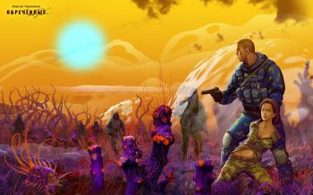
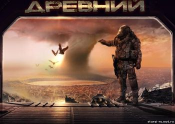
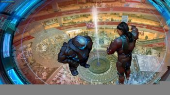
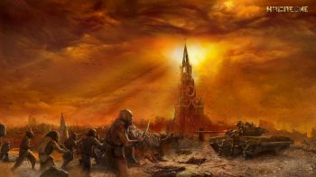

Сергей Сергеевич Тармашев (род. 21 августа 1974) — российский писатель-фантаст.
Книги Тармашева неоднократно входили в число бестселлеров российских книжных магазинов.
Первая серия «Древнего» была выпущена в 2008 году тиражом 30000 экземпляров. Последующие серии книг выходили тиражом от 25000 до 40000 экземпляров до 2012 года. Общая численность выпущенных книг этой серии достигла 210000 экземпляров. За 6 лет автор написал более 20 книг.
В 2014 году представители «West-Games» официально подтвердили слухи о том, что они ведут разработку игры «Areal: Origins» по мотивам цикла «Ареал».
По состоянию на июнь 2015 г. «West-Games» начали разработку новой игры Stalker Apocalypse®. Будет она как-то связана с серией книг «Ареал», неясно. Кроме того, Kickstarter заморозил кампанию по сбору средств на разработку игры «Areal: Origins» без объяснения причины. В официальной группе Вконтакте также нет никаких новостей о том, увидит ли свет когда-нибудь игра «Areal: Origins».
Сергей Тармашев принимал участие в разработке игры «Disciples 3», куда был приглашён на роль редактора литературного текста.
Отзывы о творчестве:
В 2009 году Тармашев получил «антипремию» награды «Большая книга» за цикл «Древний» с формулировкой «за нецелевое использование фантастических средств и бодрый, но бессмысленный перерасход штампов по проекту».
Литературный критик Александр Гаврилов отметил, что «Древний» — «это книжка, которая активно и разумно работает с главными фобиями сегодняшнего дня», с интересным сюжетом и «вполне правдоподобными конфликтами».

Мир Ареала:
27 марта 1991 г. неизвестное космическое тело, двигающееся с немыслимой скоростью, разрушилось при входе в атмосферу Земли. Его обломки, рухнувшие в глухой тайге Коми АССР под Ухтой, породили колоссальный выброс энергии по всей площади падения метеоритного потока. Меньше чем за минуту зона поражения расширилась во все стороны более чем на километр, непрерывно увеличиваясь с постоянной скоростью на один метр в сутки.
С каждым месяцем влияние Ухтинского метеорита на окружающую среду растет, необратимо изменяя все живое. Растения и животные превращаются в чрезвычайно агрессивных, смертоносных мутантов, и постоянно множатся таинственные аномалии, грозящие гибелью и увечьями любому, вступившему с ними в контакт. Вдобавок ко всему, начинается массовое исчезновение не только местных жителей и домашних животных, но и переброшенных в район катастрофы военнослужащих и ученых. Поговаривают, что пропавшие без вести люди под воздействием неведомых сил превращаются в бездушных исполнителей воли зловещего Черного Властелина, и даже мертвые, лишенные посмертного покоя, встают из могил.
И тем не менее, открытия, сделанные российскими учеными в аномальной зоне, получившей название «Ареал», перевешивают все негативные последствия падения метеорита. Ведь только здесь, в Ареале, добывают уникальную нефть типа «Икс», во много раз превосходящую все известные человечеству виды топлива, и находят артефакты, попирающие законы физики. Все это позволяет России за неполные 20 лет превратиться в ведущую страну мира, объект лютой зависти и пристального внимания резидентов всех прочих государств. Несмотря на беспрецедентные меры безопасности и высочайшую смертность внутри аномальной зоны, район Ухты наводняют искатели приключений, легкой наживы и охотники за чужими секретами всех мастей.
Конечно, бывший боец отряда «Альфа» капитан Иван Берёзов, переведенный в Отряд Специальных Операций РАО «Ареал», слышал о своем новом месте службы множество удивительных вещей. Но реальность оказалась гораздо причудливее и страшнее любых, даже самых смелых, предположений. Ведь Ареал — это такое место, где нельзя быть уверенным ни в ком и ни в чем…

Мир Древнего:
Когда привычный мир сгорает в огне ядерной войны, когда жалкие остатки великой цивилизации вынуждены спасаться в подземных убежищах, когда на кону не жизнь, а выживание, приходит время новых героев.
В начале XXII века незначительный конфликт между Индией и Пакистаном приводит к непоправимым последствиям. 29 августа 2111 года навсегда войдет в историю цивилизации, как День Великой Катастрофы. День, в который старый мир прекратил свое существование. Шесть с половиной столетий длилась Эпоха убежищ. Шесть с половиной столетий люди выживали в бункерах и изолированных от внешнего мира схронах. Шесть с половиной столетий не смели выйти на поверхность изуродованной, ядовитой, убитой ими планеты. Именно тогда впервые прозвучало имя, которому было суждено пережить века и даже тысячелетия. Стать символом надежды. Путеводной звездой для тех, кто смог пережить Последнюю Войну человечества. ДРЕВНИЙ. Офицер-спецназовец, известный под позывным Тринадцатый.
Именно благодаря ему и его товарищам, — группе офицеров, ждущих своего часа под многокилометровой толщей земли в потаенных уголках заброшенного бункера Рос, — человечество не только уцелело, но и смогло покорить ближайший космос… построить орбитальные кольца вокруг Земли и Марса… практически в полном составе полностью покинуть ставшую непригодной для жизни планету…
…чтобы однажды, почти две тысячи лет спустя, очистить ее. Сделать еще прекраснее. Сойтись в беспощадной схватке со всемогущей Корпорацией. Найти в бескрайних просторах Космоса новых союзников и новых врагов. Беспримерной стойкостью и отвагой лучших своих представителей заслужить уважение как одних, так и других. Изменить устоявшийся в течение десятков веков баланс сил в ближайших галактиках. Победить там, где поражение и гибель казались неминуемыми.
И ВСЁ ЗАБЫТЬ!
Двенадцать веков мира и благоденствия. Изобилия и роскоши. Бессмысленного, жалкого паразитирования на наследии предков. Наивной уверенности, что так будет всегда. НО МИР НЕ БЫВАЕТ ВЕЧНЫМ.
Чтобы понять это, людям придется заплатить жуткую цену. Страшный, неведомый, неуязвимый и незримый враг из самых потаенных глубин Космоса обратит свой алчный, вечно голодный взгляд на Содружество Людей. И вот уже, повинуясь его приказам, собираются неисчислимые армады кровожадных Чужих. А значит, вновь будут гореть планеты и гибнуть миллиарды. И вновь, как тысячи раз до того, цивилизация окажется на грани уничтожения, сполна познав горечь бессилия и цену беспечности. И в тот момент, когда, казалось, все кончено, снова придет ОН…

Мир Жажда Власти:
Галактические войны, полные опасных приключений и тонких политических интриг! Битвы цивилизаций за престол, ради победы в которых можно рискнуть всем! Императорская гонка началась. Правило одно: Император должен быть из другой Галактики. Ловчая сеть ноль-переходов откроет порталы, и у цивилизаций, желающих обрести Императора, будут ровно одни имперские сутки. На этот раз Ловчая сеть указала на очень хорошо знакомую нам планету…

Мир Наследия:
Загадочная смерть сотрудника одной из столичных редакций заставляет его коллегу Алену Шаройкину начать журналистское расследование. Случайно обнаруженное ею письмо от таинственного Гуру становится первым звеном цепи странных событий, ведущих к тайнам хозяев могущественного концерна «Сёрвайвинг Корпорэйшн», жаждущих мирового господства. Технология внедрения генно-модифицированных организмов в мировую систему земледелия и животноводства приносит им баснословные прибыли. Немногие смельчаки, осмелившиеся противостоять аморальным магнатам, обречены.
Прозревшая Шаройкина, понимая гибельность генетических нововведений, посвящает свою жизнь борьбе и создает влиятельную Международную Ассоциацию Генетической Безопасности. Однако альянс дельцов и политиков оказывается сильнее: МАГБ, последнее утешение простых людей, объявляют вне закона. Пророчество о последнем Трехсотлетии, отпущенном человечеству, становится страшной реальностью.
Всего чуть более семидесяти лет понадобилось человечеству, чтобы пройти страшный путь от изобретения первых генно-модифицированных организмов до Мировой Генетической Катастрофы, погрузившей цивилизацию в пучину хаоса.
В 2033 году зафиксировано появление первых ЛИГИ — лиц, имеющих генетическую инвалидность, быстро получивших в народе название «Лиги». А уже пятнадцать лет спустя лавинообразный всплеск рождаемости лигов вынуждает ООН принять Закон об Эвтаназии. Но было поздно: переполненные центры эвтаназии, уничтожающие новорожденных младенцев-мутантов, уже не справлялись со своей задачей. Миллиарды людей превратились в уродливых инвалидов, снедаемых жаждой мести к «чистым». Под воздействием трансгенов планета стремительно превращалась в ядовитую бесплодную пустыню, последние клочки почвы в которой занимали токсичные сорняк, а некогда чистый воздух наполняли смертельно опасная пыльца и канцерогены.
Сотрудники злополучного концерна, обуянные паническим страхом перед мутантами и враждебной окружающей средой, начали добровольно заточать себя в Центрах Сохранения Генетических Ресурсов, отгораживаясь от мира поясами укреплений и стволами орудий. Началась жестокая война за выживание, безжалостно уносящая жизни последних «чистых». На исходе третьего века черной летописи человечества мало кто верил, что миф, предрекший гибель всего живого, оставил не только пророчество о Возвращении, но и реальный шанс на спасение под названием «Наследие». Именно в эти страшные дни 2267 года пожилой российский ученый Николай Синицын делает гениальное открытие: монастырское надгробие в Москве и таинственная могила в окрестностях Лос-Анджелеса скрывают артефакты, которые помогут найти «Наследие»!
Год спустя, собрав остатки техники, топлива и оружия, люди с огромным трудом снаряжают экспедицию сначала к руинам некогда величественной святыни, ревностно охраняемой сотнями мутантов, укрывшимися среди бесконечных зарослей гнили, некогда бывшей густой растительностью, а затем к забытой всеми могиле. Их миссия кажется невыполнимой: окружающая среда заражена, опасные твари всегда голодны, а ожесточенные мутанты яростно мстят всем тем, кто еще сохранил свой генотип «чистым». Но обреченные на вымирание люди готовы идти до конца, еще не ведая о том, что не только подвергшиеся мутациям существа жаждут гибели их экспедиции. Те, кто уничтожил некогда прекрасный мир, не заинтересованы в его возрождении. Борьба за будущее входит в свой финальный виток, и предугадать исход противостояния не дано никому…